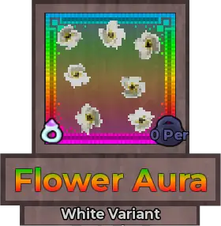
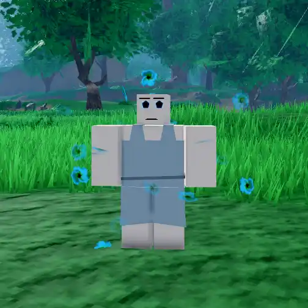

Flower Aura

Info
Slot: Accessory
Recolorable?: Yes
Unique Colors: None
Particle Effects: None
Sound Effects: None
Owner: Syahnce
Appearance & Effects
In-game description: None
The Flower Aura is a cloud of flower particles that float around the player and rotate. The flowers have four petals each, and the centers are darker than the petals. The Flower Aura does not have any unique colors, but can be recolored.
Inspiration
The Flower Aura belongs to Syahnce. It has no specific inspiration.
The Flower Aura in it's default color, white
The white Flower Aura from the back
Image Gallery
Colored red

Colored blue
Colored pink